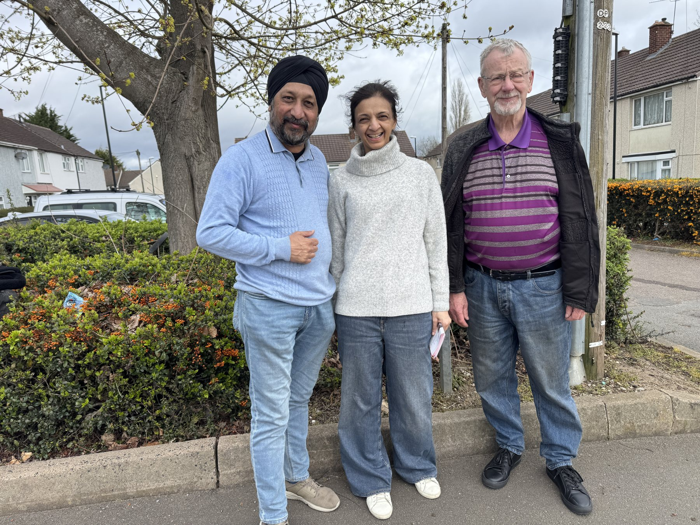

LOWER STOKE WARD · COVENTRY
Cllr Rupinder Singh
Labour & Co-operative Councillor
Approachable.
Accountable.
Accessible.
I live here, I work full-time, and I understand the pressures local families face. My promise is simple: you can always reach me, I will always listen, and I will always give you an honest answer.
PUBLIC SERVICE
A councillor
for everyone.
It doesn't matter who you voted for, what you believe or where you're from. If you live here, I'm here for you.
For me, representation means being visible, listening carefully, following things through and speaking plainly. I can't promise to solve every problem, but I can promise that you will be heard and treated with respect.
MY STORY & VALUES →✓ Listening to residents
✓ Tackling local issues
✓ A strong voice in the Council
✓ Holding decision-makers to account
✓ Working for a fairer Coventry
In Your Community
Street surgeries, casework and being out listening to the people I represent.
EXPLORE →In the Council
Scrutiny, accountability and bringing practical new ideas into the Council.
EXPLORE →Campaigning for Lower Stoke
Working alongside residents to improve our streets, neighbourhoods and city.
EXPLORE →LATEST ACTIVITY
Latest from Rupinder
GET IN TOUCH
My door is
always open.
I’ll always listen, and I’ll always be honest with you about what I can do.
Happy to speak with you in English, Punjabi, Hindi or Urdu.